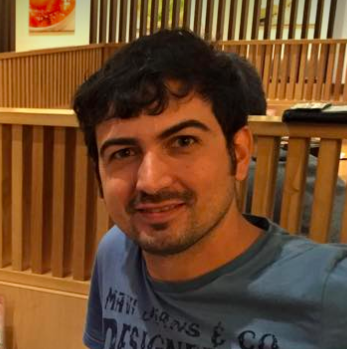

Hakkında
Programlama Türkçe öğrenilebilir mi?
Bu proje, hiç bilmeyenlerin programlamayı ana dilleriyle ve programın çalışmasını görerek öğrenebilmesi için, ticari bir amaç gütmeden geliştirilen açık kaynaklı bir öğrenme aracıdır.
Nedir?
Türkçe, görsel ve pratik bir öğrenme dili
Yürütülen bu proje; bir programlama dili Türkçe olabilir mi, hiç bilmeyenlerin ya da deneyim sahibi olmayanların öğrenmesine katkı sağlayabilir mi gibi sorulara cevap aranması amacıyla herhangi ticari bir amaç gütmeden ortaya konmuştur.
Amaç, evrensel bir dil geliştirmekten ziyade, öğretmede kullanılabilecek pratik bir dil olmasıdır.
Sadece dil terimlerini Türkçeleştirmekten ziyade onları görselleştirmeye çalışması ile programlamayı yeni öğrenenlere faydalı bir biçimde öğreteceği düşünülmektedir. Yazım dili olarak C/C++/Java ve Python dillerini benimsemesi bu dillere geçişi kolaylaştırması için amaçlanmıştır.
Geliştirilmekte olan bu dille irtibatta kalmak veya katkıda bulunmak isterseniz aktif Facebook sayfasını veya ilgili grubu buradan takip edebilirsiniz.
Dilin özellikleri
Söz dizimi C/Java ve Python'dan esinlendi
Kullanılan dilin söz dizimi (syntax) özgün olarak üretilmiştir. Her programlama dilinde olduğu gibi esinlendiği birkaç güncel programlama dili mevcuttur: Java/C++ dil ailesi ile Python. Java dil ailesinden bileşik komutların süslü parantezde yazılması alınmış, satır sonlarının noktalı virgülle bitme zorunluluğu olmaması yönüyle de Python örnek alınmıştır.
Programlama öğrenen kişinin programın çalışma mantığını anlamasına yardımcı olması hedeflenen dilin özellikleri:
Bu motivasyonla, nasıl bir dil hedeflediğimizi daha kitabi bir şekilde anlatalım:
- Dinamik tipleme (dynamically typed): Yani değişkenlere veri türü yazılmayan bir dil. Bu noktada JavaScript ya da Python diline benzetildiği söylenebilir. Buradaki amaç, kullanıcıyı gereksiz detaylara boğmadan ve çalışma aşamasında performans kaygısı gütmeden temel programlama öğelerini anlatmaya yönelik bir dil.
- Nesne yönelimli (object oriented): Güncel birçok dilde standart halini almış olmasından ve karmaşık (complex) veri yapıları gibi kavramların kodlanabilmesi ve öğretilebilmesi adına nesne yapısı ve NYP (nesne yönelimli programlama) önemli bir hal almaktadır. Ayrıca, bildiğiniz üzere veri yapılarındaki her bir eleman bir nesne olarak düşünülebilir. Örneğin bağlı listede (linked list) veya çizge (graph) üzerinde her bir eleman diğer elemanlarla etkileşim halindedir ve bazı fonksiyonları yerine getirirler. Bu nedenle veri yapılarının öğesi olan her bir eleman bir nesnedir desek çok da yanlış demiş olmayız.
- Üst seviyeli (high level): Buradaki amacımız ise kıyasla daha kolay öğrenilen ve uygulanan, yeni başlayanların çabucak anlaması için en uygun dil paradigması olan üst seviye programlama dilini model almaktır.
Teknik altyapı
Tarayıcıda çalışan bir ayrıştırıcı ve yorumlayıcı
Bilindiği üzere her bir programlama dili, makinenin anlayabileceği makine dili üzerine soyutlamalar yapılarak geliştirilir. Biraz daha detaylı bahsedersek; bu, bir takım özel araçlar -söz dizimi hatası (syntax error) için ayrıştırıcı (parser), bunları anlamlı hale getirip makineye (bilgisayar donanımına) ileten yorumlayıcı (interpreter) ya da derleyici (compiler)- kullanılarak yapılır.
Yukarıda bahsettiğimiz gereksinimlerin karşılanabilmesi için -web üzerinde kodlanabilen ve çıktıları alınabilen/gözlemlenebilen- bahsedilen araçların da web tarayıcısının imkân verdiği JavaScript dilinde yazılması icap etmektedir. JavaScript istemci (client) tarafında çalıştığından sunucu taraflı sistemlere göre daha çevik (dynamic) uygulamalar yapılması söz konusu olabilmektedir.
Bu projede ayrıştırıcı (parser) olarak JavaScript tabanlı PEG.js kütüphanesi kullanılmaktadır. PEG.js, farklı dillerde yazılmış Yacc (Yet Another Compiler Compiler), Bison ve ANTLR benzeri bir ayrıştırıcı üretecidir. Sözü geçen bu araçlar ise sırasıyla C, C++ ve Java dillerinde yazılmıştır. Ayrıştırmadan sonra elde edilen parçaların anlam kazanması ve işlenmesi için ise JavaScript dili kullanılmaktadır.
Kim ne diyor?
Farklı disiplinlerden insanların proje hakkında verdiği görüşler:
Çok güzel, temel algoritma kavramlarının öğrenilmesinde çok faydalı olur, İngilizce temelli dil bazı öğrenciler icin engel olabiliyor.
Gerçekten çok iyi bir iş çıkartmışsınız. Özellikle bir yazılım indirmeye ve kurmaya gerek kalmadan kodlama, programlamaya yeni başlayanlar için çok kullanışlı olmuş. İlk fırsatta 11 yaşındaki kardeşime nasıl yapıldığını öğretmeye çalışacağım.

Bunu sonunda biri yapmaya başladı. Bu tür adımların özellikle çocuklar için çok faydalı olacağını düşünüyorum. Tebrik ederim, umarım projenin devamı gelir. Başarılar

Harika bir çalışma olmuş. Emeğinize sağlık. Çocuklar rüya gördüğü dilde kodlamanın mantığını öğrenirse, hayal kurması daha kolay olur.
Kamu kurumlarında da özellikle genç arkadaşlarımızı, programlama ve programlama mantığını öğrenmeye teşvik ediyoruz. Çalışmanız bu anlamda bi kat daha değerli olduğuna inanıyorum. 7'den 70'e programlama.. Emeğiniz, gayretiniz için teşekkürler.

Türkçe metinsel kodlama da gerekli bence, ben ilkokuldaki yeğenime biraz öğrettim hem öğrendi hem de çok sevdi, buna açık küçükler için yapılmalı, geç bile kalındı hatta.
Kesinlikle Türkçe olması daha kolay, programlamayı öğrenme yasini düşürmede etkili olur. Bundan insanları haberdar etmek lazım, özellikle okullara duyurmak lazım.
Liseden yeni gelmiş, özellikle İngilizce hazırlık bölümü bulunmayan üniversitelerimizde; programlama mantığını giriş seviyesinde anlatmada önemli bir araç olacağını düşünmekteyim.
Keşke, lise yıllarında böyle bir imkanımız olsaydı. Programlama gençlik hayalimiz. Tükçenin matematiksel gramer yapısı programlama ifadelerine de gerçekten çok uygun. Sizleri tebrik ediyorum, bu bir ihtiyaçtı.

Gerçekten üzerine düşülmesi gereken bir konu. Sizleri tebrik eder, başarılar dilerim. Dilin verdiği üretkenlik gücü hiç bir şeyde yoktur...
Katkıda bulunanlar
Fikirleriyle projeye yön verenler
Dilin aktif olarak 2 geliştiricisi bulunmaktadır, ama fikir verme anlamında birçok kişi projenin elinden tutmuştur. Aşağıda bir şekilde iletişime geçmiş ve değerli fikirlerini paylaşmış 21 kişinin önerileri yer alıyor:
- syntax veya runtime errorlar hakkında geliştiremeler olsa iyi olur
- değişken tanımlarken "var" değilde "değişken" tipini kullanılması daha makul olmaz mı?
- adımların ilerleme hızını ayarlabileceğimiz kaydırıcı (slider) koyarsan daha etkileşimli olur gibi sanki?
- Bu dil diğer dillerden farklı jenerik bir dil olduğundan, bu dilden başka dillerde çıktı üretmek mümkün olabilir mi? Mesela C veya Java gibi.
- Rehber kısmında başlıkları sayfa sayfa görüntülense daha iyi olmaz mı?
- "hatali kod" yazılsa süper olur, sonra detayli aciklama girersin, bu ilk şimdi bakacak kullanıcılar icin iyi olur.
- "var" yerine Türkçe bir şey yapılsa?
- Belki 3-4 modlu birşey olsa, önce şekillerle flowchart, sonra türkçe kodlar, sonra 2 tane programlama kod örnegi gibi modları olabilir. hatta flowchatı kademeli öğrenme şeklinde oyunlaştırarak yapabilirsin.
- "var" yerine farklı bir kelime, özellikle Türkçe kullanılması mümkün olur mu?
Diğer 15 kişinin önerilerini göster
- Genel olarak bu tarz eğitim platformları aşamalı eğitim metodu kullanıyor. Video ile anlatıp bunun uygulamasını yaptırıyor ve doğruluğunu kontrol Edip öneride bulunuyor..
- Kodlama sayfasında yazdığımız kodları txt olarak kaydetmk mümkün ancak daha önceden masaüstüne yazdığımız txtleri çağırma olursa güzel olur diye düşünüyorum.
- Kodu yazarkeninfo tuşuna bastığımda sayfa gitmeden gelse bu bilgiler, popup window gibi, birşeyler yazarken kodları incelemek istiyorum ama doğru mu yanlışmı diye diğer sayfaya gidince kopuyor.
- Bir de geri dönmek için en başa geri dönmem gerekiyor her zaman, mesela ana sayfa butonu kenarda bi yerde sabit durabilir.
- Merhaba, benimki naçizane bir istek. Kapaktaki görüntüde "online" kelimesinden ziyade farklı bir kelime geçse idi mutlu ederdi.
- Video derslerle çekilip olayı canlandırabilirsin biraz.
- Geliştirilen dil Ebob (En büyük ortak bölen) bulma problemi mesela öklid algoritması ile algoritması yazılabilir. Yani, aslında bi yandan da algoritma ve veri yapıları eğitimi de verilebilir. Bu sayede de hem dil gelişir hem de kullanım alanı doğar.
- Forum açılır ve bir topluluk oluşturulursa çok iyi olur, bu sayede insanlar hem kodlarını paylaşabilirler hem de sorun yaşadıklarında birbirlerine danışabilirler.
- Üyelik sistemi konulup ufak daily challange'lar ve görevlerle kullanıcıların puan kazanması sağlanabilir.Bu sayede kullanıcılar forumda farklı yerlere sahip olabilirler.
- Kod syntax error oldugunda calistir dedigimiz de ya da demeden. Hata oldugunu soylese daha guzel olabilir.
- Suan anladigim kadariyla sadece bu web sitesi uzerinden calisiyor. Ileride baska ortamlarda calistirabilme ihtimaline binaen, Kodlari diger ortamlara entegre olabilecek sekilde yazmak mantikli olabilir. Mesala windows uygulamasi uzerinden kod yazmayi ogreniyor olsun, belki surekli internetde olmayabilir offline mod da calisabilmesi icin de boyle bir sey yapabilirsiniz.
- Kaç değişken kullanılmışsa o kadar var kullanmam gerekiyor. Bu da gereksiz tekrara neden olacak. Değişkene herhangi bir değer vermezsem çalışmıyor. Bunları düzeltirseniz daha iyi olacaktır.
- Hataların satınırı ve yerini gösteren hata dökümü yeni öğrenen birisinin işine epey yarar.
- Türkçe Programlama Dili'nin gelişim sürecini raporlamak ta daha sonra bu işe gireceklere bilgi vermesi açısından raporlanabilir.
- Sürekli Eğitim Merkezi gibi yerlerde Workshop verilerek dil tanıtılabilir.
- Programlamaya yeni başlayan kişilerle aracın işe yararlığı test edilebilir.
- Websitesinin ismi çok uzun. Daha kısa ve kolay yazılacak bir websitesi ismi bulursanız kullancılar açısından çok daha kolay olacaktır.
- Bir de sanırım henüz fonksiyon tanımlaması özelliğini yapmamışsınız. Sanırım eklenecek özellikler arasında aklınızdadır.
- Turkcenin yazim cumle yapisina gore kurgulamakta fikir olarak ilginc olabilir. Örnegin:
- eğer (a<5) ise {bir şey yap} (a < 5) ise {bir şey yap} değilse {bir şey yap} .....
- (a<5) iken {a++} (while döngüsü)
- değisken x={1,2,3} ; x herbiri için{ birseyler yap}
- Bir de sanırım henüz fonksiyon tanımlaması özelliğini yapmamışsınız. Sanırım eklenecek özellikler arasında aklınızdadır.
- Bir önerim syntaxda gelenekselin dışına çıkıp Türkçe cümle yapısını taklit etmek olabilir. Öğrenciler konuştukları gibi kod yazabilirler ise çok faydalı olur diye düşünüyorum.
- Eğer web veya mobil gibi alanlarda uygulama geliştirmek gibi bir amacı olacaksa bence c tipi anahtar kelimelerin Türkçe'ye çevrilmesinden ziyade özgün bir syntax ve semantic kullanılarak çok güzel bir şeyler çıkabilir. Başarılar...
- for yerine "sayarakYinele" değil de "say" veya "saydir" gibi kısa şeyler kullanılabilir. "değişken" yerine (o da kalsın tamam da ek olarak:) "değ" denebilir. Tabi bunun eğitim amaçlı olduğunu düşünürsek verilen isimler gayet de iyi :)
- Benim aklıma doğrudan, türkçe olmuşken hazır bir de çocuklara yönelik bir şeyler yapılabilir mi sorusu geldi.
- Bir de konsol kod ekranının üstünde olsa veya sağ taraftaki görüntüleme ekranının altında olsa ve konsolda yazılar alt alta yazsa daha iyi olur gibi.
- Yazılan Türkçe kodun başka dildeki örneğin Python'daki karşılığı ana kodlama alanının sağ tarafına değişken değeri koymuşsunuz ya, ana kodlama ekranının sol tarafına da yazılan kodun orjinali nasıl gözükür onu yansıtabilir..
Kaynak kodlara erişim
Bu proje açık kaynak olarak geliştirilmektedir. GitHub üzerinden erişebilir, fork edip kendi dilinizi de bu projeyi örnek alarak geliştirebilirsiniz. Dil geliştirmekle alakalı soruları da açık bir şekilde cevaplayabiliriz.
GitHub bağlantısı: github.com/mehmetakifakkus/turkceprogramlamadili
Sürüm tarihçesi
Kodlama Rehberi ve Hakkında sayfaları yeni tasarıma taşındı. Rehberdeki her örnek gerçek çıktısıyla gösteriliyor ve tek tıkla kodlama sayfasında açılabiliyor.
Güncellemeden sonra tarayıcı önbelleği yüzünden kodlama sayfasındaki düğmelerin çalışmaması sorunu giderildi.
Yeni öğrenme modu: görev kartı, adım adım çalıştırma (Çalıştır, Duraklat, Adım adım, Baştan), değişkenleri gösteren hafıza kutuları, koşulların açıklanması, örnek arama (Ctrl+K), paylaşılabilir örnek bağlantıları ve gece modu. Sonsuz döngüler artık sayfayı dondurmuyor.
C diline çeviri baştan yazıldı: üretilen kod derleniyor ve sayfayla aynı sonucu veriyor (Türkçe karakterler, doğru veri türleri, kesirli bölme, matematik fonksiyonları, büyük sayılar). C paneli sayfa açılınca ve örnek seçilince de doluyor.
“eğer(bayrak)” gibi tek değerli koşullar, “değil” işleci ve doğru işlem önceliği eklendi; matematik fonksiyonları ifadelerin içinde kullanılabiliyor; yazım hataları satır numarasıyla yakalanıyor. “i” adlı değişken kullanan döngülerin sayfayı kilitlemesi giderildi.
Gramer iyileştirmeleri: “değer” gibi değişken adları doğru çalışıyor, “veya” işleci düzeldi; metin değişkenleri (değişken ad = "Ali"), değişkenlerde eksi işareti, “İ” harfi ve yorumlarda her karakter kullanılabiliyor.
Çalışmayan bağlantılar onarıldı: PEG.js, konsol teması ve kaydetme kütüphanesi artık siteyle birlikte geliyor; “Çalıştır” düğmesi yeniden çalışıyor ve konsol koyu temasına kavuştu.
2017 yılındaki 25 sürümü göster
Kodlama ekranındaki kayma hatası giderildi.
Rehber kısmında güncellemeler yapıldı. Gitbook kitap linki eklendi.
Kullanıcılardan gelen kodlar anasayfaya dahil edildi.
Örnek kodlar eklendi. Kodlar başlangıç seviyesi, orta seviye ve ileri seviye şeklinde kısımlara ayrıldı.
Yaz komutu hem yazı türünde hem de sayı türünde ifadeleri parametre olarak alabilmektedir.
Negatif sayılar tanımlandı ve sisteme dahil edildi.
Mantiksal ifadeler "ve", "veya" ile bağlanabilir hale geldi. Bunların "eğer" veya "yinele" gibi ifadeler ile beraber kullanılması sağlandı.
Kodlama ekranının tam ekran yapılabilmesi eklendi.
Çalışma hızı ayarlar butonuna basılarak gelen pencereden ayarlanabilmektedir. 2 saniyede bir satır kod çalışabilmesinin yanında saniyede 5 satır kodun çalışabilmesi de mümkündür.
Örnek kodlara açıklamalar da eklendi, böylece kodlamanın ne amaçla yapıldığı hakkında kullanıcı bilgi sahibi olmaktadır. "değ" kelimesinin de değişken tanımı yapmak için kısaltma olarak kullanılması sağlandı.
Kodların yazılması esnasında otomatik olarak tamamlanması kısmı eklendi. Çalıştır butonuna basınca kod hata içeriyorsa bunun hangi satırda olduğu belirtilmesini sağlayacak kısımlar eklendi.
"eğer" ve "yinele" komutlarının iç içe çalıştırılabilmesi sağlandı.
Bazı temel matematik fonksiyonları eklendi. "taban", "tavan", "mutlak", "karekök".
Ondalıklı sayılar sisteme eklendi. İşlem önceliğini yapmayı sağlayan parantez kullanımının tanınması sağlandı.
Değişken isimlerinde "_" karakterinin kullanılması eklendi. (Muharrem Engin'e teşekkürler.)
Kodlama Rehberi'nde Seçme ve Döngü komutları konuları tamamlandı. Örnek kodlar hazırlanıp konuldu.
Kodlama Rehberi sekmesi konuları belirlendi. Değişkenler ve işlemleri ile İşleçler (Operatorler) konusuna giriş yapıldı.
"eğer değilse" komutunda bir hata vardı. Hatanın farkına vardıldı ve giderildi (Alican Yıldırım'a teşekkürler). Hakkında kısmı tamamlandı.
Alt sağ köşeye "Temizle" ve "Kaydet" isminde 2 buton eklendi. Bunlara fonksiyon kazandırıldı.
Editörün satır sayısının artması ve azalması durumunda butonların yerinin kayarak editöre uyum sağlaması sağlandı.
Çıktılar kısmındaki değişken güncellemeleri daha düzenli hale getirildi. Yorum satırı gibi olacak şekilde renklendirilmesi ve formatlanması sağlandı. (Ahmet Selman Bozkır'a teşekkürler)
Editör kısmında önemli geliştirmeler yapıldı. Siyah beyaz üzerine olan editorde hem komutlar renkli hale getirildi, hem de imlecin bulunduğu satır belirgin hale getirildi.
Türkçe karakter kullanımına geçilerek tamamen Türkçe haline getirildi, "yanlis" yerine "yanlış", "dogru" yerine "doğru" gibi ifadeler kullanılmaya başlandı.
"yinele", "sayarakYinele" gibi temel programlama komutlarında hatalar bulunduğu için ilk sürümde eklenmemişti. Bunlar da eklenince tekrarlı kod yazmak için gerekli komutlar mevcut oldu.
Sadece değişken tanımlama, matematiksel işlemler, "eger", "degilse". Hemen hemen bütün komutlar görsellenebilir durumda.
Uyumluluk
Kodların çalıştırılması ve adım adım gösterilmesi, güncel sürümleriyle şu tarayıcılarda sorunsuz olarak mümkündür: Chrome, Edge, Firefox, Safari ve Opera. Internet Explorer artık desteklenmemektedir.
Kaynaklar
Kodlama için başka kaynaklar
Kodlama yapabilmek için başka interaktif kaynaklar da mevcut; bunlar daha çok çocukların eğlenerek öğrenebileceği tarzda kaynaklar.